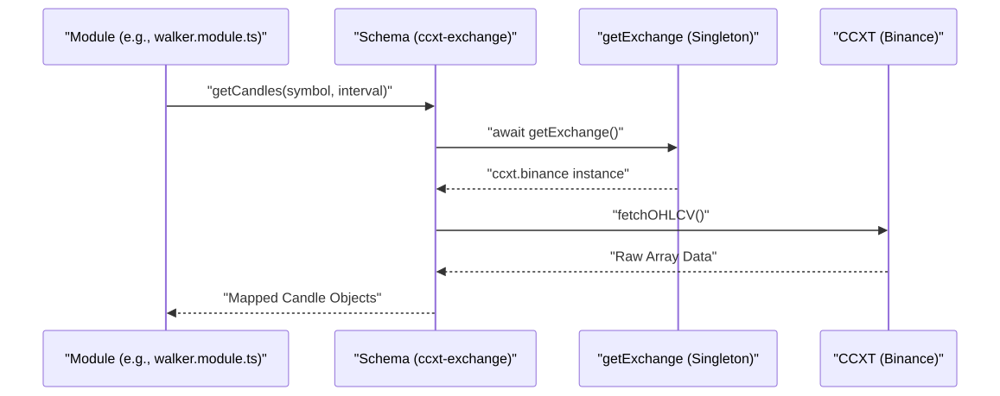

The Exchange Integration & Modules layer provides the connective tissue between the high-level trading strategies and the low-level market data providers. This system relies on a standardized adapter pattern to ensure that data fetching, price formatting, and order book retrieval remain consistent whether the system is running in a live environment or a simulated backtest.
The primary mechanism for this integration is the ccxt-exchange schema, which is registered across multiple utility modules to support diverse tasks such as data dumping, strategy "walking," and signal generation.
The integration layer abstracts the complexities of the CCXT library into a unified interface used by the backtest-kit framework.
The following diagram illustrates how the abstract "Exchange Schema" in the logic space maps to concrete CCXT implementations and singleton instances in the code.
Diagram: Exchange Schema to Code Entity Mapping

The core of the exchange integration is the ccxt-exchange schema. It provides a standardized way to interact with the Binance spot market using the CCXT library. To prevent redundant API connections and rate-limit exhaustion, the system uses a singleshot singleton pattern to initialize the Binance exchange instance.
Key capabilities provided by this adapter include:
fetchOHLCV results to the internal candle format used by strategies.tickSize and stepSize from market metadata to format prices and quantities correctly via roundTicks.For details, see CCXT Exchange Adapter.
The system utilizes several "module" files that register the exchange schema into different execution contexts. This allows different scripts (like the data dumper or the strategy optimizer) to share the same exchange logic.
| Module File | Purpose | Key Functionality |
|---|---|---|
modules/dump.module.ts |
Data Export | Registers ccxt-exchange for fetching historical candles to local storage. |
modules/pine.module.ts |
Indicator Analysis | Provides exchange access for scripts generating TradingView-compatible data. |
modules/walker.module.ts |
Strategy Optimization | Full implementation including getOrderBook and formatPrice for strategy evaluation. |
While the exchange adapter handles how to talk to the market, the symbol configuration defines what markets are available. This configuration governs the priority, visual representation (icons/colors), and metadata for every trading pair supported by the AI trader.
The configuration categorizes symbols into priority tiers (e.g., Premium 50 vs. Low 300) which influences how often or how deeply the AI analyzes specific assets.
For details, see Symbol Configuration.
The following diagram shows how a request for market data flows from a generic module through the CCXT adapter to the physical exchange.
Diagram: Market Data Flow
